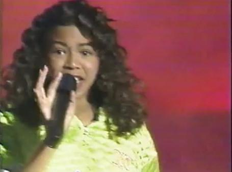
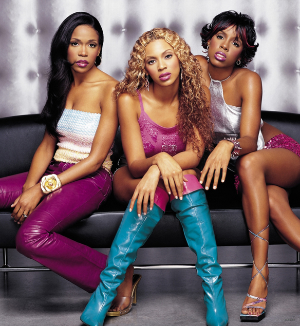

Before There was the Group, There was Destiny!

It seemed like any other day on September 4, 1981, the birds chirped, kids hurried off to school and in Houston, Texas Tina Tina Knowles would go on to deliver her first born Beyonce Giselle Cater-Knowles. As young Bey grew a dance teacher noticed Bey's ability to sing when she started humming a song and Beyonce finished it, hitting the high notes. Over the years Beyonce continued refining her craft by attending performance art schools, participating in choirs and competing in local talent shows. It was through such shows that Beyonce came to join her first girls group Girl's Tyme, click on the video to see their performance on Star Search the largest talent show on national TV at the time. Girl's Tyme failed to win, later in 1995 Beyoncé's father resigned from his job to manage the group and the group changed their name to Destiny's Child in 1996, based upon a passage in the Book of Isaiah.
One of Destiny's Children

